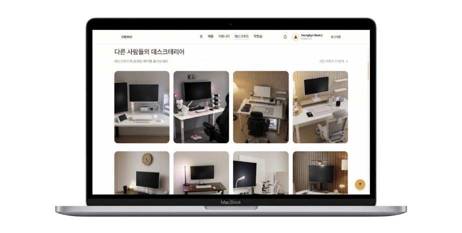

실측 기반 3D 데스크테리어 시뮬레이터
내 책상, 사기 전에
3D로 먼저 배치해 보세요.
DERO는 실제 제품 규격을 기반으로 자신만의 데스크 환경을 구성하고, 제품 간 호환성과 예산을 미리 확인할 수 있는 3D 데스크테리어 서비스입니다.

개발 기간
2026.07 ~ 2026.08
프로젝트 유형
팀 프로젝트
담당 역할
Frontend
주요 기술
주요 성과
프로젝트 우수상
01 / 04